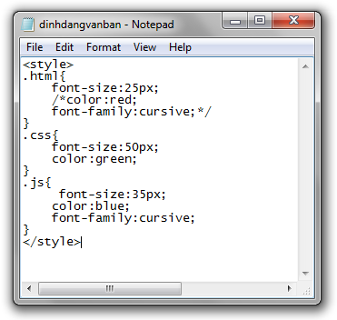

Những kiến thức cơ bản trong việc viết mã CSS
 |
- Trong bài học này, tôi sẽ tổng hợp lại một số kiến thức cơ bản trong việc viết mã CSS (những kiến thức này tuy hơi vụn vặt nhưng lại có một tầm quan trọng rất lớn, xét về mặt lâu dài thì chúng sẽ giúp các bạn tránh mắc phải những sai lầm không đáng có) |
1) Thứ tự ưu tiên giữa các khai báo
- Trong một bộ định dạng, nếu chúng ta sử dụng nhiều khai báo để thiết lập giá trị cho cùng một thuộc tính thì mặc định thuộc tính đó sẽ nhận giá trị của khai báo được viết cuối cùng.
- Bên trong bộ định dạng của phần tử <h1> phía dưới có ba cái khai báo dùng để thiết lập giá trị cho thuộc tính color. Tuy nhiên, thuộc tính color chỉ có thể nhận giá trị của khai báo được viết cuối cùng, đó chính là giá trị green.
h1{
color:red;
font-size:50px;
color:blue;
color:green;
text-decoration:underline;
}
2) Vấn đề khoảng trắng & ngắt xuống dòng
- Trong một bộ định dạng, vấn đề khoảng trắng & ngắt xuống dòng giữa các khai báo là không quan trọng.
- Ví dụ, năm bộ định dạng bên dưới có cách viết khác nhau những chúng đều có chung một chức năng.
h1{font-size:40px;color:green;font-family:cursive;}
h1{ font-size:40px; color: green; font-family: cursive; }
h1{
font-size:40px;
color:green;font-family:cursive;
}
h1{
font-size:40px;
color:green;
font-family:cursive;
}
h1{
font-size:40px;
color:green;
font-family:cursive;
}
- Tuy nhiên, chúng tôi khuyến khích các bạn nên trình bày một bộ định dạng theo khuôn mẫu thứ năm, bởi vì mẫu trình bày này nhìn rất đẹp mắt và được đại đa số lập trình viên áp dụng.
3) Cách ghi chú thích
- Chú thích trong CSS cũng có ý nghĩa tương tự như chú thích trong HTML
- Trong CSS, khi chúng ta muốn viết một đoạn chú thích thì chúng ta cần phải đặt những nội dung chú thích vào bên trong cặp dấu /* */
<!DOCTYPE html>
<html>
<head>
<title>Xem ví dụ</title>
<style>
.html{
font-size:25px;
/*color:red;
font-family:cursive;*/
}
.css{
font-size:50px; /*Thiết lập kích thước chữ 20 pixel*/
color:green;
}
/*PHẦN TỬ JS ĐƯỢC ĐỊNH DẠNG RẤT ĐẸP*/
.js{
font-size:35px;
color:blue;
font-family:cursive;
}
</style>
</head>
<body>
<p class="html">Tài liệu học HTML</p>
<p class="css">Tài liệu học CSS</p>
<p class="js">Tài liệu học JavaScript</p>
</body>
</html>
4) Nội dung bên trong một tập tin CSS
|

SAI
|
- Bên trong một tập tin CSS chỉ được phép chứa các bộ định dạng hoặc các đoạn chú thích, nó tuyệt đối không được chứa các thẻ HTML. - Có một số bạn mới học CSS thường bị nhầm lẫn giữa hai phương pháp Internal & External. - Đối với External, họ nghĩ các bộ định dạng phải viết bên trong phần tử <style>, phần tử <style> thì đặt bên trong tập tin CSS. Như thế là sai hoàn toàn ! |
5) Nhóm các bộ định dạng lại với nhau
- Sau này sẽ có những lúc chúng ta cần phải định dạng cùng một kiểu cho nhiều phần tử khác nhau.
- Khi đó, thay vì phải viết bộ định dạng cho từng phần tử thì chúng ta có thể rút gọn lại bằng cách nhóm các bộ chọn với nhau trong cùng một bộ định dạng.
- Lưu ý: Nhớ thêm một dấu phẩy nằm ngăn cách giữa mỗi hai bộ chọn.